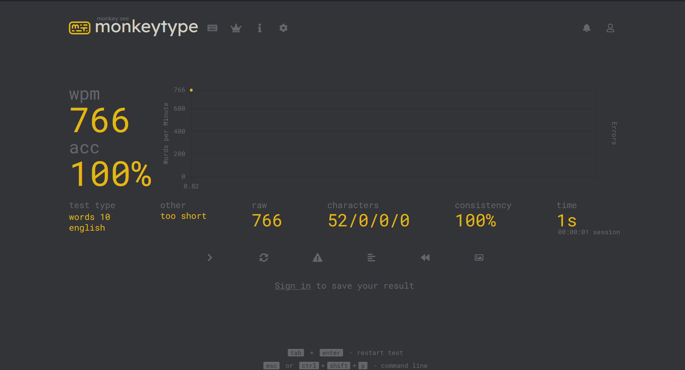

|
badPico
So recently Ive been working on using my rpi pico, and Ive
found a really fun use case for it! Been having a ton of fun
programming stuff and seeing results.
For as long as I can remember Ive been fascinated by offensive
security, and not just "hacking". I mean full all in
investment, the idea of breaking, finding solution, or using
trickery to do things on computer has always been super fun. I
even had a favorite hacker (Kevin Mitnick my hero).
It wasn't long before I found my first real
fascination in the space, physical hardware attacks! I found
the rubber ducky and it compeltely took over my life, really
pushing me towards offensive security.
If you dont
know what a rubber ducky is, its a device that looks like a
usb drive but actually mimics a keyboard and inputs keystrokes
at lightning speed into a target computer! Almost undetectable
and unstoppable if you have access to a physical computer.
Absolutely awesome.
Immediately I would google it
just to find they were a little too much for moneyless me to
purchase.
However, at some point I found the
arduino badusb and decided to make it myself for two dollars.
Then I graduated to wifi version with an esp32, a rpi 0 w
p4wnp1, p4wnp1 aloa, and then finally now on the pico!
Now Ive decided to code the badusb functionality
into the pi myself. Its not like this doesnt exist already,
its definitely been done before. However, the script kiddie of
before that originally found this fascination could never
imagine what Id be doing now.
This is the first
time Ive coded functionality myself, its fun knowing how to
make this stuff myself! I can add my own things and it boots
faster than a real pi while having a ton of processing and
space. Its crazy that this tiny device can run full circuit pi, if this was done on a arduino this would be impossible! Its really helped me see how my programming journey has
looped back to a field that kicked it all off.
I think that to end this project off I will implement the ability to exfil data through the pico's built in storage similar to p4wnp1 aloa. After that I think I can call this a success!
Next
up I will probably either get a rpi pico w and make it
wireless with a webserver, or I will optimize the code in
something other than python. Python seems to be the limiting
factor in terms of typing speed, and while its kind of
pointless because the typing speed is really fast anyways I
think itd be cool to shoot for the kind of performance of a
ducky or arduino badusb.
|